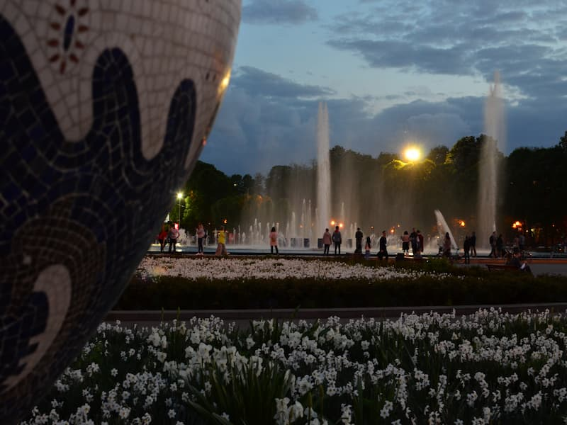
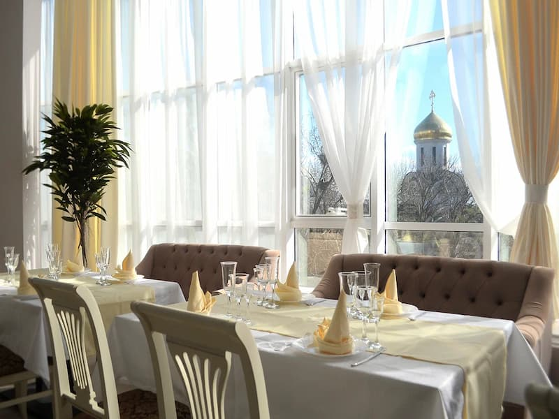
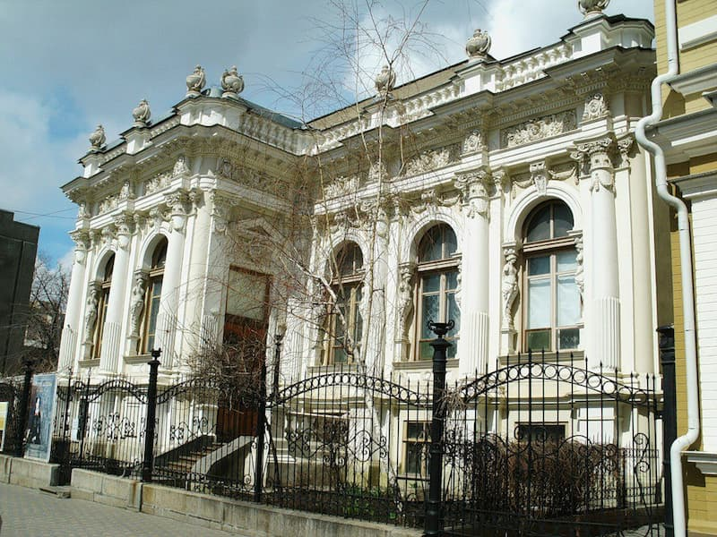
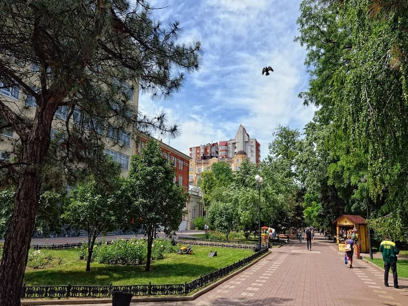
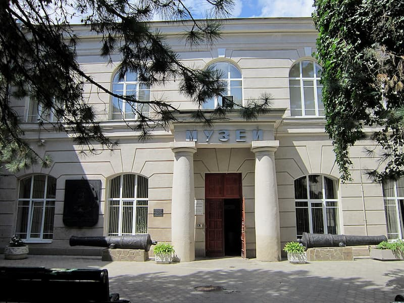
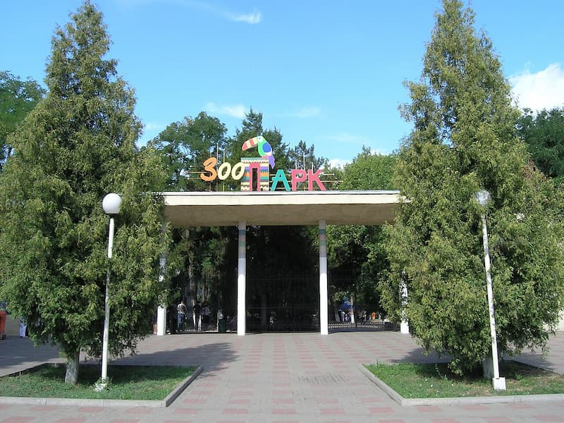
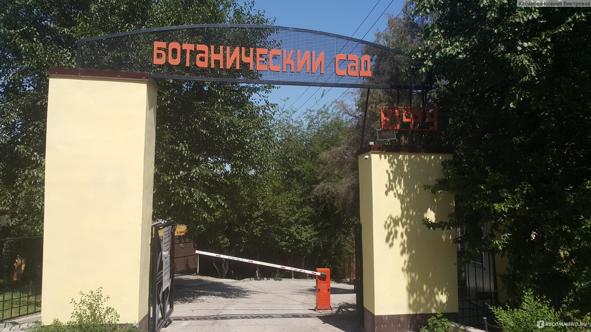
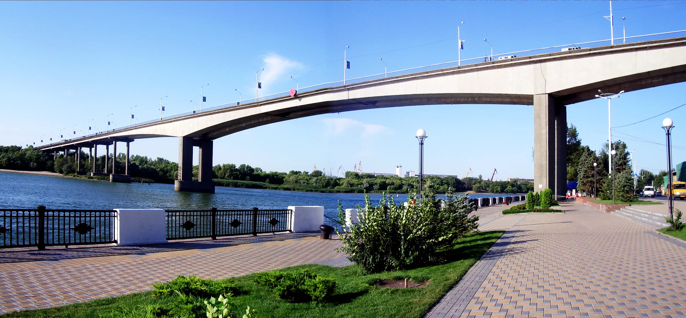

Покровский собор
Один из старейших православных храмов Ростова-на-Дону, памятник архитектуры XVIII века

Набережная Дона
Главная прогулочная зона Ростова с видом на реку, причалами и ресторанами

Левый берег Дона
Пляжная зона с ресторанами, барами, развлечениями и великолепными закатами

Парк им. Горького
Главный парк Ростова с аттракционами, кафе, фонтанами и театром

Центральный рынок
Колоритный городской рынок с донскими деликатесами, рыбой и специями

Ресторанный квартал
Лучшие рестораны донской кухни в историческом квартале Ростова

Музей
Богатейшая коллекция живописи и скульптуры от классики до современного искусства

Исторический квартал
Особняки XIX–XX вв., мощёные улицы и дореволюционная атмосфера старого Ростова

Краеведческий музей
История донского края от древних скифов до современности с уникальными экспонатами

Зоопарк Ростова
Один из крупнейших зоопарков юга России с редкими животными и прекрасными садами

Ботанический сад ЮФУ
Огромный ботанический сад с тысячами видов растений, оранжереями и прогулочными аллеями

Ворошиловский мост
Знаковый мост через Дон с панорамными видами на реку и набережную, одна из визитных карточек города